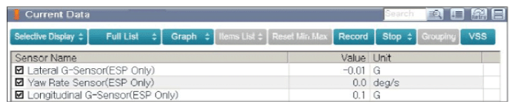
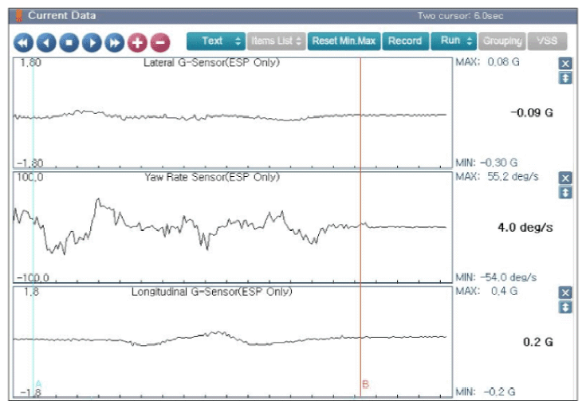

LEMON Manuals
: Even more car manuals for everyone: 1960-2025
Home
>>
Hyundai
>>
2022
>>
Elantra N Line, Standard Trans
>>
Repair and Diagnosis
>>
Brakes
>>
Traction Control
>>
Abs/Esp Diagnosis (Except HEV) (1 Of 2)
>>
DTC C1283-02: Yaw Rate & G Sensor-Signal
>>
DTC Information And Inspection
>>
GDS data Analysis
GDS data Analysis
Connect GDS to Data Link Connector (DLC).
Turn ignition switch "ON".
Maintain the vehicle standing still.
Monitor the "Lateral G Sensor, Yaw Rate Sensor, Longitudinal G Sensor" parameter on the "Current Data" menu of the GDS.
Specification
: Approx. 0 in stand still condition.

Courtesy of HYUNDAI MOTOR AMERICA

Courtesy of HYUNDAI MOTOR AMERICA